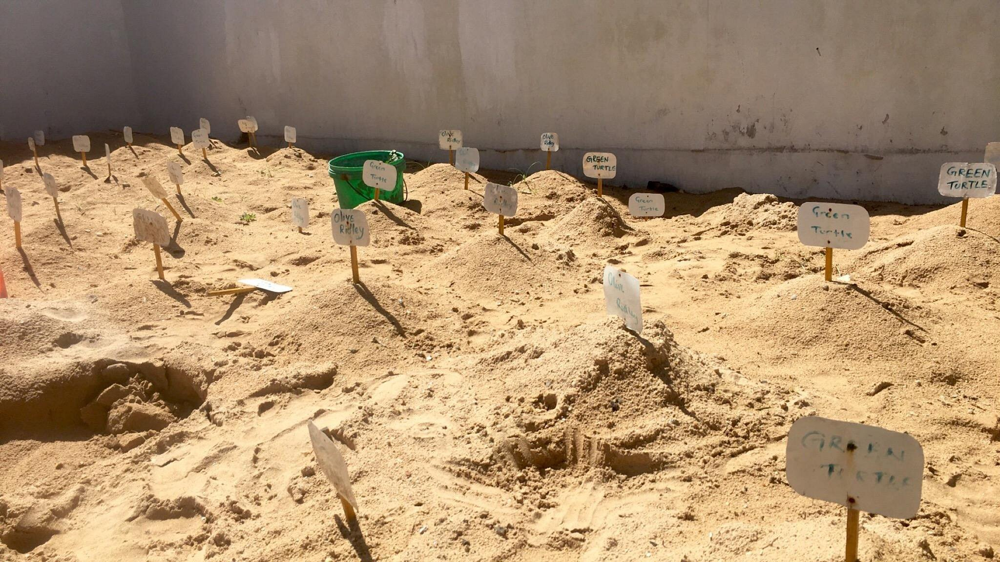
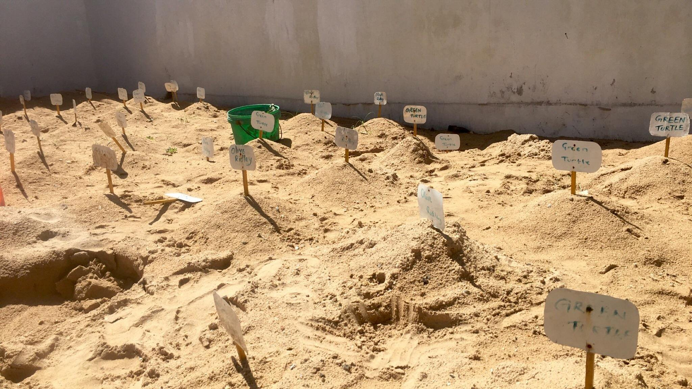

Hikkaduwa, located on the southern coast of Sri Lanka, is home to a popular turtle hatchery that has been operating for over 25 years. The Hikkaduwa Turtle Hatchery was established in 1986 with the aim of protecting and conserving sea turtles and their eggs, which are often poached and sold illegally in Sri Lanka.
The hatchery collects sea turtle eggs from the beaches and moves them to a protected area within the hatchery, where they can hatch safely and without the threat of predators. Once hatched, the baby turtles are kept at the hatchery for a short period to ensure their survival before being released back into the ocean.
In addition to hatching and releasing sea turtles, the Hikkaduwa Turtle Hatchery also serves as an education center for tourists and locals alike. Visitors can learn about the different species of sea turtles, their habitat, and the threats they face. The hatchery also provides information on how people can help conserve sea turtles, including avoiding buying products made from turtle shells, reducing plastic pollution, and reporting poaching activity to authorities.
The Hikkaduwa Turtle Hatchery has been instrumental in increasing the population of sea turtles in Sri Lanka and has become a popular tourist attraction. However, it has also faced criticism for some of its practices, such as keeping adult turtles in captivity for display purposes. Nevertheless, the hatchery remains an important site for sea turtle conservation in Sri Lanka.
 

The Hikkaduwa Turtle Hatchery in Sri Lanka is renowned for its conservation efforts aimed at protecting and preserving sea turtles.
This hatchery plays a vital role in safeguarding these majestic creatures and raising awareness about the importance of their conservation.
At the Hikkaduwa Turtle Hatchery, a dedicated team of volunteers and staff work tirelessly to rescue, rehabilitate, and release injured or sick sea turtles.
They provide a safe haven for injured turtles, nursing them back to health before reintroducing them to their natural habitat.
The hatchery also serves as a nesting site, where sea turtles come ashore to lay their eggs. The staff carefully collect the eggs and transfer
them to protected areas to enhance their chances of hatching successfully.
One of the key objectives of the hatchery is to protect sea turtle nests from natural threats and human interference.
By relocating nests to the hatchery, they ensure a higher survival rate for the eggs and hatchlings. Additionally, the hatchery conducts regular
monitoring and research activities to gather valuable data on nesting patterns and population trends, contributing to the conservation and
scientific understanding of these incredible creatures.
Another important aspect of the Hikkaduwa Turtle Hatchery's efforts is its educational initiatives. Visitors to the hatchery have the opportunity
to learn about sea turtles, their life cycle, and the conservation challenges they face. The hatchery conducts informative tours and educational programs,
raising awareness among tourists and local communities about the importance of protecting these endangered species.
The hatchery also collaborates with local fishermen, encouraging them to report injured or entangled turtles that they come across during
their fishing activities. By fostering positive relationships with the fishing community, the hatchery plays a crucial role in reducing
accidental bycatch and raising awareness about sustainable fishing practices.
The success of the Hikkaduwa Turtle Hatchery's conservation efforts can be seen in the increasing number of sea turtle hatchlings successfully
released into the ocean. Through their dedication and commitment, the hatchery has contributed significantly to the conservation of sea turtles in Sri Lanka.
The Hikkaduwa Turtle Hatchery and Rescue Center in Sri Lanka plays a crucial role in the rehabilitation of injured sea turtles. Through their dedicated efforts, they provide a safe and nurturing environment for injured turtles to heal and recover before being released back into the wild. At the rescue center, experienced staff and volunteers work diligently to assess the injuries of the turtles and provide appropriate medical care. This includes treating wounds, infections, and injuries caused by entanglement in fishing nets or boat strikes. The team closely monitors the turtles' progress, ensuring they receive the necessary medication, nutrition, and veterinary attention throughout their recovery journey. In addition to physical rehabilitation, the center also focuses on addressing the psychological and behavioral needs of the injured turtles. They create spacious and naturalistic enclosures that mimic the turtles' natural habitat, allowing them to regain strength and rebuild their natural instincts. By minimizing human interaction and providing a stress-free environment, the center ensures that the turtles can adapt to their natural behaviors and prepare for their eventual release. The rehabilitation process is tailored to each individual turtle's needs, considering factors such as the severity of the injury and the species-specific requirements. The dedicated team at the Hikkaduwa Turtle Hatchery and Rescue Center combines their expertise in marine biology, veterinary care, and animal welfare to provide the best possible care for the injured turtles. Throughout the rehabilitation period, the center also conducts educational programs to raise awareness among visitors and local communities about the threats faced by sea turtles and the importance of conservation. These initiatives aim to foster a sense of responsibility and encourage sustainable practices that protect marine ecosystems. The ultimate goal of the rehabilitation efforts at the Hikkaduwa Turtle Hatchery and Rescue Center is to release the healed turtles back into their natural habitat. Once the turtles have regained their health and fitness, they are carefully reintroduced to the ocean, giving them a second chance at life in the wild. The tireless work of the rescue center not only contributes to the conservation of sea turtles but also raises awareness about the need for responsible human actions to protect these magnificent creatures and their fragile ecosystems.